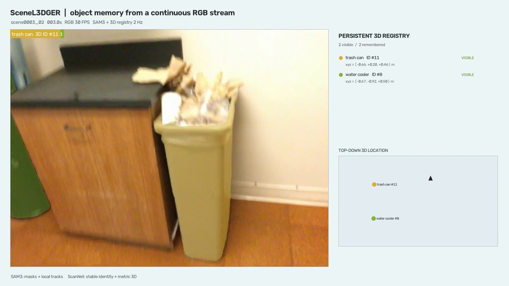
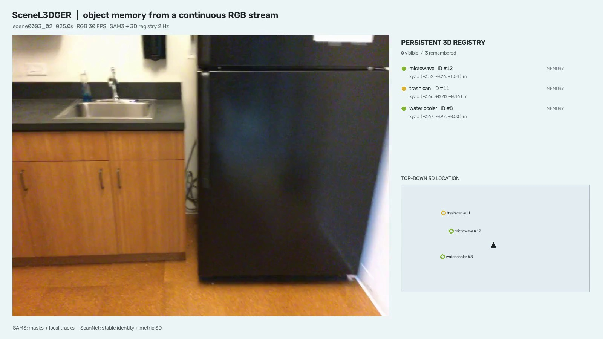
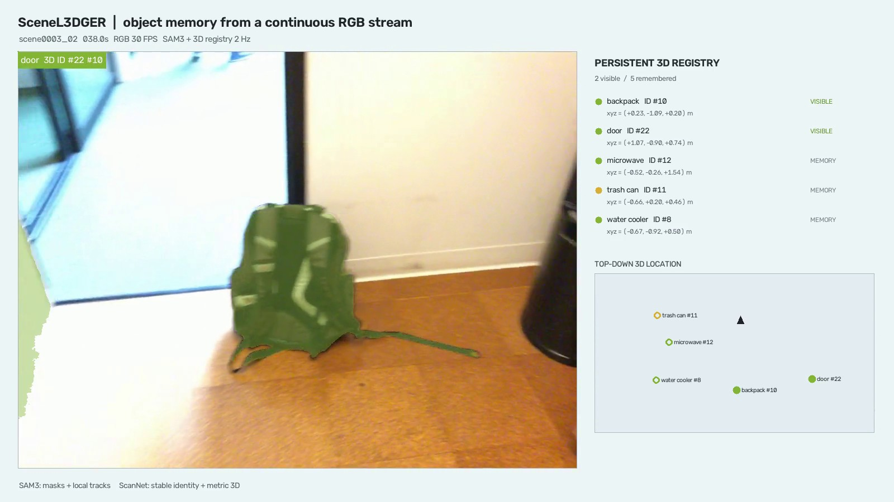
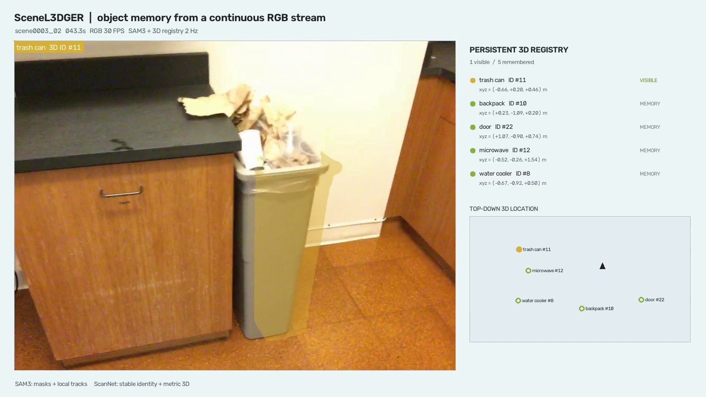

RGB stream
Use the full 30 FPS ScanNet sequence. A frame is sampled every 0.5 seconds for tracking.
We run SAM3 text-conditioned video tracking on a continuous RGB scan, link every valid mask to a stable 3D scene identity, and keep that object readable while it is absent. The same registry also admits objects that appear only near the end.
RGB is rendered at the native 30 FPS. SAM3 and the 3D registry update at 2 Hz, exactly as used by the pilot. “Memory” means the object is not currently matched but its identity and metric position remain in the registry.
scene0003_02 · no temporal cuts
The experiment separates 2D perception from persistent 3D identity. This is a target generation pipeline for memory supervision, not a claim that SAM3 alone predicts metric 3D.
Use the full 30 FPS ScanNet sequence. A frame is sampled every 0.5 seconds for tracking.
Five fixed text prompts produce per-frame masks and model-local track IDs.
Mask overlap plus class agreement resolves each valid observation to one stable ScanNet instance.
Track fragments merge by 3D ID; center, extent, last-seen time, and visibility survive absence.
Reappearance requires at least four seconds without a valid match. “Late” means the first observation occurs after 60% of the scene. Metric positions are axis-aligned ScanNet coordinates.
| Object | 3D ID | First seen | Last seen | Longest absence | SAM fragments | Matched IoU | Event |
|---|---|---|---|---|---|---|---|
| Water cooler | #8 | 0.0 s | 44.5 s | 26.5 s | 1 | 0.769 | reappeared |
| Trash can | #11 | 1.0 s | 44.5 s | 22.5 s | 2 | 0.595 | reappeared + merged |
| Microwave | #12 | 5.5 s | 44.5 s | 34.0 s | 1 | 0.869 | reappeared |
| Door | #22 | 32.5 s | 38.0 s | — | 1 | 0.628 | late |
| Backpack | #10 | 36.5 s | 39.5 s | — | 1 | 0.890 | late |
The evidence frames are decoded directly from the published video, including the held-memory interval with zero current matches.

The water cooler and trash can acquire stable IDs and metric centers.

All three early objects are off-camera; their 3D entries remain queryable.

The door and backpack were absent at the beginning and are admitted when they first appear.

The trash can is matched back to ID #11 after more than twenty seconds away.
Four fixed held-out examples generated locally with greedy decoding from the same V11 run. These are qualitative failure cases for review, not an aggregate benchmark or a success claim. Download raw outputs and reference NLLs.
| Held-out question | Reference | Step 50 | Step 100 | Step 150 | Step 200 |
|---|---|---|---|---|---|
| What are the dimensions of the bench?object_size_realtime · scene0005_00 | 4.2 m × 0.5 m × 1.2 m | 1.8 m × 0.6 m × 0.5 m | 1.6 m × 0.6 m × 0.5 m | 1.6 m × 0.6 m × 0.5 m | 1.6 m × 0.6 m × 0.5 m |
| What is in front of the radiator?object_recognition_realtime · scene0002_00 | small table | bed | white rectangular cabinet | bed | bed |
| Have you encountered a table so far?object_counting_backward · scene0022_01 | A · Yes | B · No | B · No | B · No | B · No |
| Where will the camera be located in five seconds?camera_direction_forward · scene0010_01 | D · to the right | B · to the front-right | B · to the front-right | B · to the front-right | B · to the front-right |
Reference: 4.2 × 0.5 × 1.2 m
Reference: small table
Reference: A · Yes
Reference: D · to the right
This is a feasibility demonstration for designing object-level memory supervision. It is not an object-tracking benchmark.
scene0003_02, one continuous 44.5-second scan.The next step is not another tracking heuristic. It is to train memory queries to recover these object identities, metric locations, and semantic features from the fixed-capacity SceneL3DGER state.